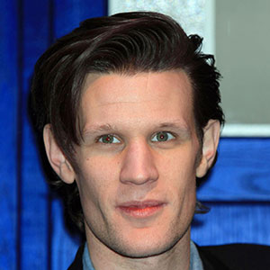

Portrayed by Matt Smith
|  |
Smith was born and brought up in Northampton where he attended Northampton School for Boys, a state comprehensive secondary school. He had planned to be a professional football player, having played for the youth teams of Northampton Town F.C., Nottingham Forest F.C. and Leicester City F.C.[7] After a serious back injury, his drama teacher introduced him to acting by surreptitiously signing him up as the tenth juror in an adaptation of Twelve Angry Men.[8] Although he took part in the play, he declined going to a drama festival that his teacher had signed him up for.[8] His drama teacher persisted, and eventually persuaded him to join the National Youth Theatre in London. |